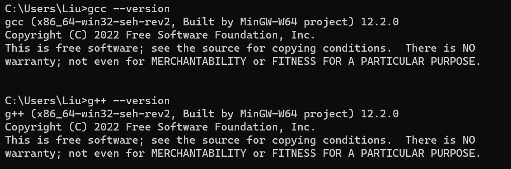
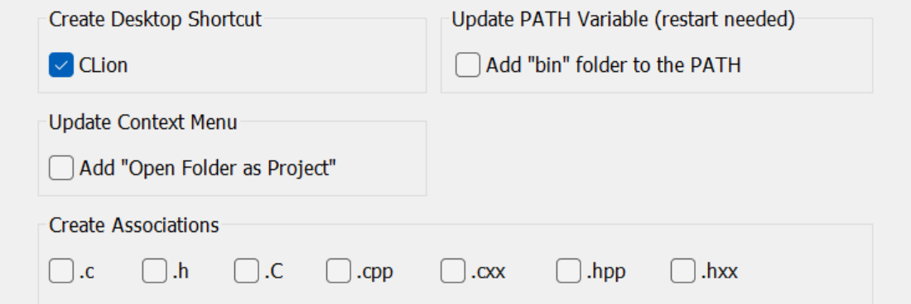
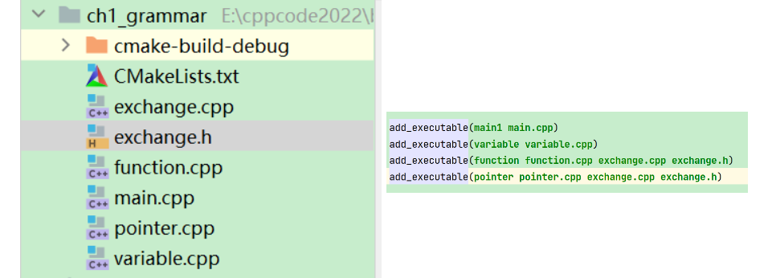

CLion¶
mingw64下载安装¶
- 下载地址：https://sourceforge.net/projects/mingw-w64
- Github地址：https://github.com/niXman/mingw-builds-binaries/releases
- 解压之后在系统环境变量 Path 中添加
<解压目录>/bin - 通过
gcc --version和g++ --version命令查看是否安装成功
CLion安装及创建项目¶
- 下载地址：https://www.jetbrains.com/clion
- 自定义安装路径，并选择创建桌面快捷方式

Update PATH Variable是指可以通过命令行打开CLion； Add "Open Folder as Project" 右键文件夹可以打开项目； Create Associations 设置为一些文件的默认打开方式
创建新项目¶
New->New Project->C++ Executable
CLion中函数的分文件编写¶
- 创建后缀名为
.h的头文件 - 创建后缀名为
.cpp的源文件（文件名与头文件一致，后缀不一致） - 在头文件中写函数的声明
- 在源文件中写函数的定义
CLion中实现分文件编写，首先同时添加
.h和.cpp文件，.h文件中声明函数，.cpp文件中定义函数，主文件中添加#include"xx.h"同时要在CMakeLists.txt文件中add_executable(主文件名 主文件名.cpp 函数文件.cpp 函数文件.h)
一个项目中多个main函数¶
- 在CLion中一个项目里的可以有多个main函数，例如，下图中每个.cpp文件中都有自己的main函数

- 首先创建 .cpp文件，在 CMakeLists.txt 文件中添加
add_executable(文件名 文件名.cpp) - 如果一个项目中有子文件夹可以在子文件夹中，先在主项目的 CMakeLists.txt 文件中添加
add_subdirectory(子文件夹)，然后在子文件夹中创建 CMakeLists.txt 文件，通过add_executable()进行对应的文件编译 - 右侧第三行是在 function.cpp 中引用了 exchange.cpp 中的函数
- 第四行是在 pointer.cpp 主函数文件中引用了exchange.cpp中的函数
通过Git管理以及连接GitHub¶
方式一¶
-
创建项目以及通过Git进行版本控制
-
CLion中创建新项目
- VCS\(\rightarrow\)Create Git Repository
- 右键cmake-build-debug\(\rightarrow\)Git\(\rightarrow\)Add to .gitignore
-
同理，将不需要进行版本控制or上传到GitHub的文件添加到.gitignore文件中
-
将项目文件上传到GitHub
-
在GitHub中创建Repo
- CLion中Git\(\rightarrow\)Manage Remotes\(\rightarrow\)
- 选择+，name: origin, url: GitHub中Repo的SSH链接
- 在主文件夹下的CMakeLists.txt文件中添加子文件夹
add_subdirectory(dirname) - 在
dirname文件夹中创建CMakeLists.txt文件，通过add_executable(filename filename.cpp)添加可执行.cpp文件 - Git\(\rightarrow\)Add\(\rightarrow\)Commit\(\rightarrow\)Push
注意：这种方式Push的时候要选择origin->main
方式二¶
- 先在GitHub中创建Repo
- CLion中直接从GitHub中导入项目
- 创建CMakeList.txt，点击Load CMake Project，之后会自动创建cmake-build-debug文件夹，将该文件夹加入到gitignore文件
- 新建文件并编写代码
- 配置CMakeLists.txt
- Git\(\rightarrow\)Add\(\rightarrow\)Commit\(\rightarrow\)Push
CLion中创建C/C++文件添加模板代码¶
File -> Settings -> Editor -> File and Code Templates，在中间Includes选项卡中选择C File Header，添加代码如下：
1 2 3 4 5 6 7 8 9 10 11 12 13 14 15 16 17 18 | |